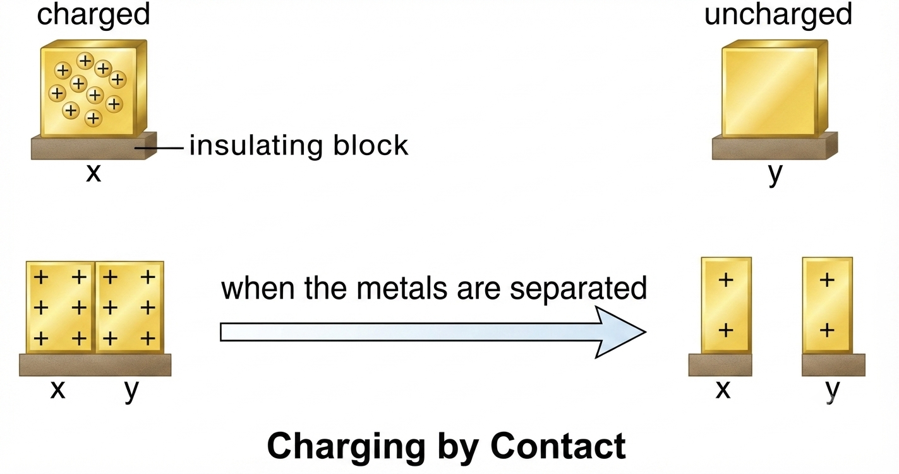
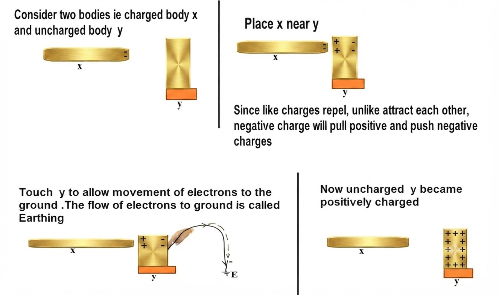
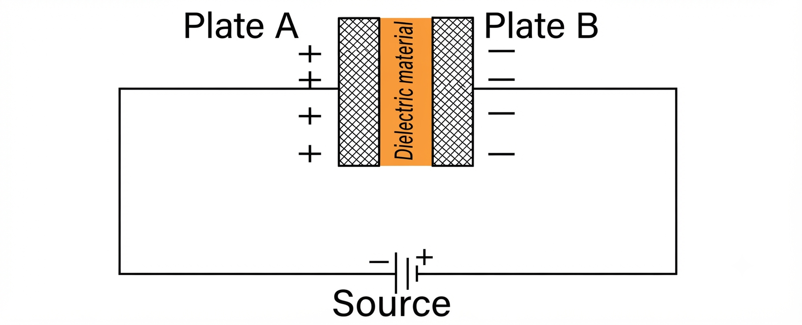
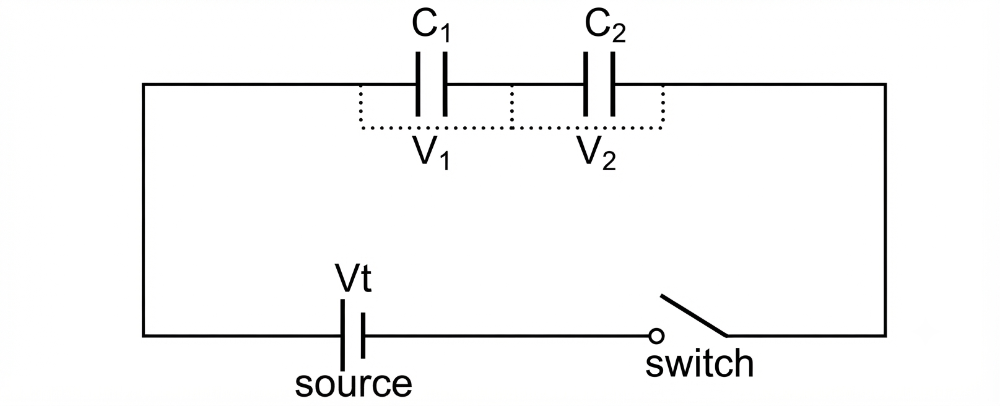
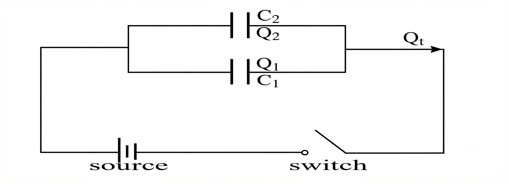

- Static electricity (Electrostatics) is the study of charges at rest.
Origin of Charges
- When a body is rubbed, it causes the atoms to lose or gain electrons which are revolving around the atomic structure, causing the body to become charged.
Types of Electric Charges
- Positive charge (\(+\))
- Negative charge (\(-\))
-
Positive charge
Positive charge is a charge acquired when an object loses electrons from its atomic structure.
-
Negative charge
Negative charge is a charge acquired when an object gains electrons into its atomic structure.
Charge Acquired After Rubbing

Fundamental Law of Electrostatics (Static Charges)
The law states that:
“Like charges repel, unlike charges attract each other.”
Charging
Charging is the process whereby a material loses or gains electrons.
Methods of Charging a Body
- By rubbing or friction
- By conduction or contact
- By induction
By Friction
- This is the method of charging a body by rubbing.
- For example, when an ebonite rod is rubbed with fur, some electrons are transferred from the fur to the ebonite. Therefore, the ebonite becomes negatively charged while the fur becomes positively charged.
- When a glass rod is rubbed with silk, electrons will be transferred from the glass rod to silk; the glass rod will be positively charged while the silk will be negatively charged.
By Contact
- This is the method of charging a body by touching two conductors together.
- Let us say plate X is positively charged while plate Y is neutral. Both plates are placed on insulating blocks as shown below:

- If the two plates are brought together, plate X draws electrons from plate Y, causing plate Y to become positively charged.
By Induction
- This is the method whereby a charged object is brought near, but not touching, a neutral conducting object.

- Consider two bodies: a charged body X and an uncharged body Y.
- Place X near Y. Since like charges repel and unlike charges attract, the charged object induces opposite charges on the near side of Y and similar charges on the far side.
- Touch Y to allow movement of electrons to the ground. The flow of electrons to the ground is called Earthing.
- Remove the earth connection and then remove X; the uncharged body Y becomes charged.
- A capacitor is a device used to store electric charges and energy.
- The ability of a capacitor to store electric charges is known as capacitance.
- The SI unit of capacitance is the Farad (F).
- A Farad is the capacitance of a capacitor in which a charge of one coulomb produces a potential difference of one volt across its plates.
- Capacitors are widely used in electronic circuits such as radios, televisions, and alarm systems.
- The potential difference, \(V\), across the plates is directly proportional to the charge, \(Q\), accumulating on them: \(Q \propto V\).
- Introducing the capacitance constant \(C\):
$$Q = CV$$
Charging a Capacitor
- A parallel plate capacitor consists of two metal plates (plate A and plate B) separated by a dielectric material. The plates accumulate opposite charges when connected across a potential difference.

Important Terms:
- Dielectric Material: An electrical insulator that can be polarized by an applied electric field.
- Polarization: The process of separating negative and positive charges in a material.
- Potential Difference (p.d.): Work done in moving a unit positive charge from one point to another. Its SI unit is the Volt (\(\text{V}\)).
- Earth Potential: The electrical potential of the Earth is taken as zero.
Discharging a Capacitor
- When the two plates of a charged capacitor are connected by a wire, electrons flow from the negative plate to neutralize positive charges on the positive plate.
- This momentary movement of electrons produces a brief pulse of current (and potentially a small spark).
- When charge flow stops, the capacitor is fully discharged.
Types of Capacitors
Capacitors are classified according to their dielectric material:
- Paper (plastic film) capacitor
- Oil-filled capacitor
- Electrolytic capacitor
- Mica capacitor
- Variable (air-filled) capacitor
Arrangement of Capacitors
(a) Capacitors in Series Connection

In a series circuit, total potential difference is split across the capacitors: \(V_T = V_1 + V_2\).
Since \(V = \frac{Q}{C}\) and charge \(Q\) is identical across all series capacitors (\(Q_T = Q_1 = Q_2 = Q\)):
$$\frac{Q}{C_T} = \frac{Q}{C_1} + \frac{Q}{C_2}$$
Dividing through by \(Q\) gives the effective capacitance formula:
$$\frac{1}{C_T} = \frac{1}{C_1} + \frac{1}{C_2}$$
For two capacitors in series, this simplifies to:
$$C_T = \frac{C_1 \times C_2}{C_1 + C_2}$$
(b) Capacitors in Parallel Connection

In parallel, the total charge is the sum of charges stored on each capacitor: \(Q_T = Q_1 + Q_2\).
Since \(Q = CV\):
$$C_T V_T = C_1 V_1 + C_2 V_2$$
Since potential difference across parallel branches is equal (\(V_T = V_1 = V_2 = V\)):
$$C_T V = V(C_1 + C_2) \implies C_T = C_1 + C_2$$
Individual Work – 1
- Two capacitors of \(20\ \mu\text{F}\) and \(25\ \mu\text{F}\) are connected in (i) series and (ii) parallel. What is the effective capacitance for each case?
ANS: (i) \(11.11\ \mu\text{F}\), (ii) \(45\ \mu\text{F}\)
- Determine the effective capacitance obtained when two capacitors each of \(10\ \mu\text{F}\) are connected first in parallel and then in series.
ANS: (i) \(20\ \mu\text{F}\) (parallel), (ii) \(5\ \mu\text{F}\) (series)
- To obtain an effective capacitance of \(3\ \mu\text{F}\) using a \(12\ \mu\text{F}\) capacitor and a second capacitor, calculate the required value and state how it should be connected.
ANS: Connected in series; Value = \(4\ \mu\text{F}\)
Factors Affecting Capacitance of a Parallel Plate Capacitor
- Area of the plates (\(A\)): Capacitance is directly proportional to plate area (\(C \propto A\)).
- Distance between the plates (\(d\)): Capacitance is inversely proportional to plate separation (\(C \propto \frac{1}{d}\)).
- Dielectric material (\(\varepsilon\)): Using a dielectric material like glass, mica, or polythene instead of air increases capacitance.
$$C = \frac{\varepsilon A}{d}$$
where \(\varepsilon\) is the permittivity of the dielectric medium.


 ANS: (a) \(V_1 = 9.6\text{ V}\), (b) \(V_2 = 14.4\text{ V}\)
ANS: (a) \(V_1 = 9.6\text{ V}\), (b) \(V_2 = 14.4\text{ V}\) ANS: (a) \(R = 18\ \Omega\), (b) \(R = 3.61\ \Omega\), (c) \(R = 9.2\ \Omega\)
ANS: (a) \(R = 18\ \Omega\), (b) \(R = 3.61\ \Omega\), (c) \(R = 9.2\ \Omega\)